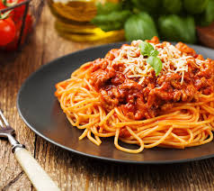

Bolognese

Description
A classic Bolognese Sauce should be in every home cook’s repertoire! My version is smooth, rich, hearty and slow cooked to perfection. The very essence of Italian comfort food!
Ingredients
- 2 tbsp olive oil
- 400g/14oz beef mince
- 1 onion, diced
- 2 garlic cloves, chopped
- 100g/3½oz carrot, grated
Steps
- Heat a large saucepan over a medium heat.
- Add a tablespoon of olive oil and once hot add the beef mince and a pinch of salt and pepper.
- Beat the 3 large eggs in a medium bowl and season with a little freshly grated black pepper. Set everything aside.
Back to Home